Chapter 2
The eye of the grandmaster
2.1 Introduction
From the moment when he learns the moves of the game, every chess player becomes acquainted with combinations. What is a combination? If we consult the manuals, we see a great variety in the terminology. For instance, Igor Bondarevsky, in his book Combinations in the Middlegame, gives the following definition:
• ‘A combination is a forcing manoeuvre connected with a sacrifice.’
The notion of ‘forcing manoeuvre’ is also specified by Bondarevsky:
• ‘We speak of a forcing manoeuvre when the defender is forced to play moves that are imposed upon him.’
Bondarevsky does not elaborate upon the nature of these imposed moves. He does state that a combination mostly originates ‘on the basis of the specific features of the position’. The features that make the combination possible are also called ‘motifs’, which, according to Bondarevsky, lead to the eventual winning plan.
Another author with a great reputation was the Yugoslav Vladimir Vukovic. In his book The Chess Sacrifice, he has classified sacrificial motifs according to the so-called ‘effective elements’. What he means by the latter, he tries to illustrate with the help of an example:
In the middlegame, the pawn move e2-e4 is accompanied by a number of specific ‘effects’. Besides the well-known motives to play such a move (the diagonals d1-h5 and f1-a6 are opened, and at the same time the squares d5 and f5 are controlled), we can establish that this pawn now can no longer protect the squares d3, f3, d4 and f4. Also, square e2 is vacated and White has created space behind this pawn for his own pieces (suddenly ♖e1-e3 has become possible). Finally, we can establish that the pawn on e4 has interrupted the b1-h7 and h1-a8 diagonals, as well as the fourth rank. Especially these latter considerations can be the harbinger of a combination idea.
Vukovic’s view is interesting, but unfortunately in this book he falls back into some peculiar terminology, demonstrating, in my opinion, that he no longer sees the wood for the trees. Thus, he uses several terms that to my mind are confusing rather than constructive.
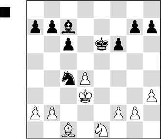
Black is a fraction better, as White has an isolated pawn on d4 and, as a consequence, a slightly worse bishop. After White’s last move, 23.♔e2-d3, Black has to do something about his knight. Euwe made the ill-fated decision to start a counterattack:
23…♗a5?? 24.b4!
This move is called a ‘placement sacrifice’ by Vukovic. He writes: ‘in order to prevent the loss of a piece, Black must accept the placement sacrifice’:
24…♗xb4 25.♘c2
Vukovic: ‘Now the bishop placed on b4 is attacked by the knight, which is removed from e1, and so a double attack on bishop and knight is created, causing Black to lose a piece. Ergo: placement, removal and double attack in a combination of not more than two moves.’
I would have written that White wins a piece with an intermediate move.
Euwe resigned a few moves later.
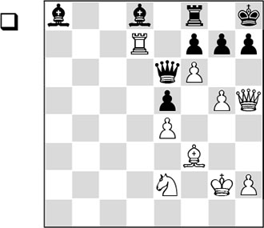
With the name he attaches to the following combination, as well as his explanations, Vukovic merely creates a curtain of fog, where he should have provided clarity. Thus he writes about ‘breaking a pawn blockade’, and his explanation is as follows: ‘The removal of a pawn blockade is a singular effective element, even though it only occurs in cooperation with other elements. Thus, the blocked pawn can be liberated by diverting the blockader, or when an enemy piece ends up within a pawn’s field of fire by means of placement.’
Can you follow this?
By the way, the combination itself is very pretty:
32.g6!
White simply threatens to give mate.
32…h6
32…fxg6 is not possible in view of 33.fxg7+ ♔g8, and now the beautiful queen sacrifice 34.♕xh7+! ♔xh7 results in an even more beautiful minor promotion: 35.gxf8♘+.
33.♕xh6+!
With another queen sacrifice, White works his way towards the enemy king.
33…gxh6
The rest is forced:
34.g7+ ♔g8 35.gxf8♕+ ♔xf8 36.♖xd8+ ♕e8 37.♖xe8+ ♔xe8
And the endgame is a simple win.
Coined terms should provide clarity. The terminology used in the above examples merely confronts the chess student with riddles. Of course, it is not my intention to launch an attack on Vukovic’s work. The man has written a nice book with beautiful examples of combinations. But I do not think we can speak of a well-thought-out system here.
A much more logical and profound, but also didactically sound build-up can be seen in the Step-by-Step Method, which is very commonly used in the Netherlands. In our country we may count ourselves lucky to have this great teaching method that IM Cor van Wijgerden and Rob Brunia have developed together. Van Wijgerden used to be a schoolteacher by profession. At the chessboard he achieved the title of International Master, and soon he started to occupy himself with chess training. Before long, he became the national coach of the Dutch chess federation. Rob Brunia was a pedagogue who also had a wide psychological background. He was attached to an institute for highly gifted children. Unfortunately, he died at a relatively young age. Both pioneers worked for a long time on a didactically well-founded teaching plan, where tactics are central. But also in other areas, for instance strategy and endgame technique, the fundamentals are treated, and they are elaborated upon in the higher Steps. Without effort, one can become proficient in all of the areas and, in this way, pick up all kinds of skills.
The authors have written an introduction that is much closer to practice than is the case in most manuals. The terminology is also better suited to the nature of the themes. Beside a number of handbooks of instruction (written especially for trainers), they have compiled several workbooks, with exercises classified by theme and level. A chess fan can climb from the level of beginner to strong club player. For more information you can surf to www.stappenmethode.nl.
It is not without justification that a lot has already been written about the different combinational motifs our game offers. Statistics teach us that around 70-80% of all chess games are decided with a combination. People talk about exploiting tactical possibilities offered by the position. I would like to describe the discovery of a combination as a ‘random picture’ in a game, where one of the players is offered the possibility to decide the game in his favour with a combinational motif.
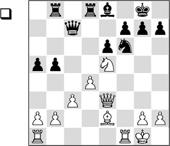
Virtually every experienced club player will look at the following exchange sacrifice.
1.♖xf6! gxf6
Black has to take back, otherwise he will just be a piece down.
2.♕g3+
This check is, of course, the logical follow-up, since the black king is starting to feel the ‘draught’.
2…♔f8
Only now does the real motif appear. White wins the queen with a discovered check:
3.♘g6+ hxg6 4.♕xc7
1-0
The first moves of the combination are self-evident – only at the end the actual motif has to be discovered. The reason that Black loses is because his queen is unprotected. Since White can play his queen to g3 with tempo, he sets up a battery. The trouble for Black is that his king must move to a fatal square (f8 or h8), after which the knight can give a winning discovered check. It is clear that this type of theme can play a role in every game.
In fact, we could claim that a ‘silly coincidence’ (the fact that the queen is unprotected and that, due to White’s check, the black king must move to a square where it falls victim to a discovered check) is Black’s undoing.
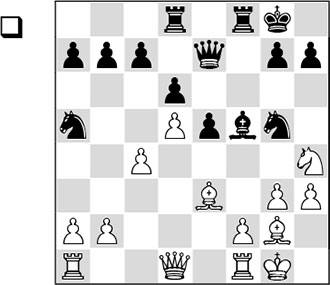
What strikes us in this position is the bad position of the black knight on a5. But at first sight, White cannot immediately take profit from that.
1.♘xf5
With two preparatory moves White introduces a simple motif with which he wins a piece. Instead, 1.♕a4 wouldn’t yield much after 1…b6.
1…♖xf5 2.h4!
A strong intermediate move that removes all possible counterplay from the position. Here, 2.♕c2 would also win material, but then Black can struggle on with 2…♘f3+ 3.♗xf3 ♖xf3 4.b4 ♕d7.
2…♘f7 3.♕c2
This is another preparatory move for the decisive motif. The pawn on c4 is protected with gain of tempo, thereby depriving the knight of its escape square.
3…♖f6 4.b4
And so the curtain falls: in the end the knight is trapped, after White has carefully paved the way.
The resemblance between these two positions is that the white player weaved the motif in question in the position only after two preparatory moves. In the first case, a discovered check was the point; in the second, a piece was surrounded. Labelling such preparatory moves is a discovery in the terminology of the Step-by-Step Method.
There are players who build such tricks into their game all the time, and some of them are successful with it too. They are called tacticians.
2.2 The tactician is opposed by the strategist
Another type of player is he who takes a long-term view of the game. His play is based on pawn structures, finding strong squares, and besieging weak pawns. He makes plans that are in accordance with the strategic demands of the position. Such a player is called a strategist.
Compared to tactics, not much has been written about chess strategy yet. Of course, in the past we have known several great players who have formulated positional laws. But the accessibility of these regularities is much less concrete than in the case of combinations. A long-term plan can be thwarted at every move. At first sight there seems to be no such thing as ‘forcing manoeuvres’ that lead by force to a concrete advantage.
And yet, pursuing a plan that is in accordance with the demands of the position is absolutely necessary to achieve better results in games.
When we are building up a game, we are fairly quickly confronted with the question ‘How to continue?’. Or rather: ‘What should I pay attention to, what are the features of the position, and what should I aim for in the future?’. From the above we can gather that strategy and tactics are in constant conflict with each other. For example, a strategically beautiful set-up can be spoilt by an ‘accidental combination’ at any moment. But it is also true that a well-built-up game in most cases needs to be crowned with a tactical turn. In practice it has turned out that many players find it difficult to combine long-term play with a timely discovery of tactical finesses. Only the strongest players manage to find a kind of balance between these two components of the game.
Let’s take a close look at the following fragment.
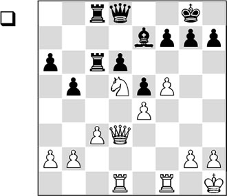
Fischer wrote: ‘This is the kind of position I get in my dreams’. A first glance at the position shows that White has a firm grip. Let’s see if we can sum up the specific features:
- White has a strong knight versus a weak bishop for Black;
- This is thanks to the strong central square d5, which has been irreparably weakened by Black;
- White has slightly more space on the kingside, mainly because of the far advanced pawn on f5, and he can play for an attack on the king;
- The white pieces are well centralized and more active than their black colleagues;
- Black has a little more space on the queenside thanks to the advance …b7-b5.
- Black hopes to activate his rook on the c-file, either via pressure on the e4-pawn, or by pushing …b5-b4, in order, after c3xb4, to penetrate on c2 with one of the rooks.
21.♖a1!!
A formidable move, which is a sign of great strategic understanding. For the purpose of this book, it is unfortunate that the alternative also gives White an advantage.
I asked many (experienced) players, while showing this position to them, how White could best continue on the basis of the above-mentioned features. Not surprisingly, many of them suggested to continue with 21.f6!, which is also more in the line of expectation than Fischer’s choice. How many people – not to mention computer programs – wouldn’t be inclined to start with this attractive move? Indeed, the black king position is torn apart after 21…♗xf6.
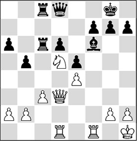
Analysis diagram
A) 22.♖xf6?!. There will always be ‘lunatics’ who are even prepared to sacrifice the rook for the bad bishop; however, this does not yield the intended result: 22…gxf6 and now:
A1) 23.♕g3+?! ♔h8 24.♕h4 ♕g8 25.♘e7 (the faulty attacking attempt 25.♘xf6?! certainly does not yield White any advantage: 25…♕g6 26.♖d3 d5!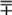, and Black has defended himself successfully) 25…♕g5 26.♕h3 f5!?.

Analysis diagram
And also here Black does not have any problems;
A2) 23.♖f1 ♔h8 24.♖xf6 (24.♘xf6 ♕f8!) 24…♖8c7 25.♕h3 (25.♘xc7?? ♕xf6–+) 25…♖b7.
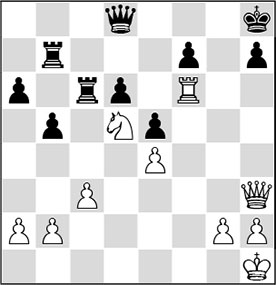
Analysis diagram
Even though White has the better chances here, the question is if he can make anything substantial out of it.
B) 22.♘xf6 gxf6. Closer analysis teaches us that Black’s weakened king position does not yet guarantee White an easy win here.
One should realize that after 21.f6!?, Black has been relieved of a great problem in his position in one single blow: his bad bishop. In many variations Black is not without counterplay.
A small summary:
B1) After 23.♖f5, Black looks for counterplay with 23…b4!? 24.cxb4 (also after 24.♕g3+ ♔h8 25.♕h4 bxc3 26.♖h5 ♕g8 there is nothing concrete to play for) 24…♖c1 25.♖ff1 ♖xd1 26.♖xd1 ♖c6, and even though White keeps the better chances, the question is if he can convert these into a win;
B2) 23.♕h3! (an improvement) 23…♔h8 (23…♕e7 seems worse: 24.♖d3 ♔h8 25.♖g3 ♖g8 26.♖xg8+ ♔xg8 27.♕h6, and White maintains winning chances) 24.♖f3 (or 24.♖f5
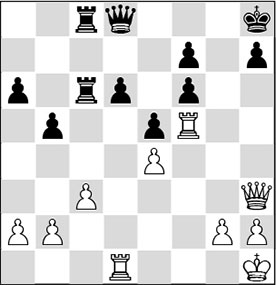
Analysis diagram
24…♖c4!, with counterplay) 24…♕e7 25.♖df1. Here also, we have to rate White’s chances more highly, but a direct decision is certainly not on the cards.
If we formulate this in words, we can conclude that after 21.f6 ♗xf6 and now both 22.♘xf6+ and 22.♖xf6, Black must try to fight off an annoying white initiative, but he has quite a lot of defensive resources at his disposal.
The actual course of the game was quite different!
Let’s return to the diagram position, as Fischer’s first move may have come as a surprise to you. After 21.♖a1!!, he threatens to open the a-file with 22.a4 and to invade with his rook(s). In the game Black still feared the threat of 22.f6, and so he tried the ugly move
21…f6?!
But also after the better 21…♗f8 his fate would have been sealed. White continues with 22.a4.
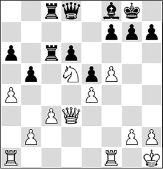
Analysis diagram
Now there are three possibilities:
A) 22…♖b8 23.♘b4 ♖cb6 24.a5 ♖6b7, and here White can choose from various good moves: 25.♘xa6, winning a pawn, and 25.♘c6, winning an exchange, catch the eye;
B) 22…bxa4 23.♖xa4 ♖a8 (also after 23…a5, White will be pulling the strings. After 24.♖fa1 ♖c5 (24…♖a8? 25.b4), both 25.♕a6 and 25.h3 are promising for White. With his superior knight on d5 he will often be able to push forward his b-pawn undisturbed, since Black doesn’t have a shred of counterplay), and now both 24.♖fa1, 24.b4 and 24.f6 g6, and then the two possibilities mentioned above, are decisive. The pawn on a6 cannot be defended, after which White’s b-pawn decides the game in his favour;
C) 22…♖c4. Probably the best move. White will also have to allow a slight weakening in order to carry his plan through: 23.b3 ♖4c5 24.axb5 axb5 25.♖a7.
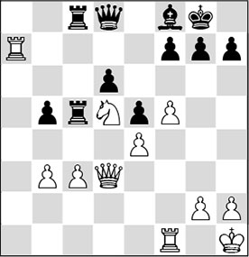
Analysis diagram
White has a firm grip on the position here. He can increase the pressure with 26.♖fa1, or the cunning 26.f6!?.
22.a4 ♖b8??
This weak reply hands White the full point on a silver platter.
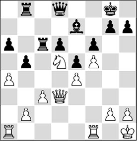
23.♘xe7+
Black resigned in view of 23…♕xe7 24.♕d5+ followed by 25.♕xc6, winning a rook.
This is a nice example of the ‘random picture’ I mentioned earlier. After Black’s blunder, the position suddenly contains a tactical motif, so now White does exchange his good knight for the bad bishop. This earns him a full rook. What was the secret of Fischer’s solution? From the diagram position White achieves an easy win because he knows how to exploit the advantage of his good knight against the bad bishop. Or rather: White makes use of the knight on the queenside, where the bishop cannot intervene, and therefore Black plays, as it were, with one piece less on that wing.
An essential factor with all this was the target constituted by the pawn on b5. This allowed White to stage a quick operation via the a-file. Had the pawn been on b7, then it would not have been so easy for White to make progress on the queenside, although he could also then have worked with the push a2-a4-a5 followed by ♖d1-a1-a4-b4-b6. So, the peculiarity of this position is that the ‘logical’ 1.f6 is not in conformity with the features of the position, whereas after the ‘mysterious’ 1.♖a1!!, White gets a grip in a simple way, and Black can do nothing about it.
With this example I hope to have afforded a glance behind the scenes. One might ask: what is logic? Everything depends on the ability to assess a position correctly by evaluating the features in the right way. In the above-mentioned example it wasn’t his opponent’s weakened king position that White depended on, but the target offered to him by the b5-pawn. Thus, he was able to transfer the battlefield to the queenside, underlining the advantage of the strong knight on d5 versus Black’s bad bishop.
We have now discovered that it is important to collect a number of positional advantages in a game, which then have to be converted into concrete advantages.
2.3 What makes a master?
‘The term “master” has more or less gone out of fashion as an epithet for someone who has attained a high, generally recognized, degree of competence in a special trade or field.’
These words can be read in Prof. Adriaan de Groot’s famous thesis entitled Thought and Choice in Chess, published in the Netherlands in 1946 (first English edition in 1965). De Groot hastily adds: ‘In chess, the term has retained its full impact: the concept still has real meaning.’
He also showed vision when he wrote: ‘True, also here the official regulations regarding the attainment of a master title have become diluted and the boundaries of mastership have faded, but still the concept has maintained a genuine meaning.’
De Groot was quite prophetic when, at the time when FIDE was still in its infancy, he already predicted the title inflation that has taken place in the past decades.
After a quite extensive plea he concludes that mastership is demonstrable: ‘Having fecund experience, as distinct from encyclopedic knowledge, this forms the nucleus of mastership’.
The thesis Thought and Choice in Chess is still regarded as a ground-breaking work in cognitive psychology. For example, De Groot served up positions to stronger and weaker players and asked them to express their train of thought. He summarized this train of thought, which was described in as much detail as possible, in protocols, which he was later able to use for the formulation of so-called ‘chess thinking’.
The striking thing about this research is that De Groot discovered that strong players do not mainly derive their playing strength from their ability to calculate quickly and accurately. The difference lies mainly in the way a strong player knows how to assess a position. Within a few seconds, he succeeds in finding the right orientation, and as a consequence, he will find the best move in many cases. It wasn’t until 1996 that a second important book appeared in the same research area. This book, entitled Perception and Memory in Chess, was written by De Groot in cooperation with the Swiss psychologist and chess player Fernand Gobet. The nice thing was that this book made thankful use of an experiment that had been set up by the Dutchman Riekent Jongman, one of De Groot’s students. In this experiment, which resulted in the thesis The Eye of the Master, Jongman developed a unique set of spectacles. On these spectacles, a camera and a light were mounted, which followed the eye movements of the wearer. Now, various players were asked to look at certain positions, and the researchers tried to follow the eye movements. Jongman demonstrated that you can measure true playing strength by having a test subject look at a position for a few seconds (see the picture below).
Gobet’s merit was that he wrote a computer program with which eye movements could be simulated. How a strong player orientates on a position is best illustrated with an example that I have myself devised for this occasion.
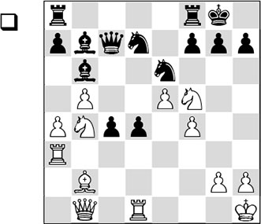
The above position is characteristic for this experiment. At first sight, the position looks messy. The pieces are scattered seemingly randomly all over the board and it’s no easy task to discover any harmony in this chaos.
The eye movements of the Hungarian grandmaster Andras Adorjan are being registered. On the other side of the board sits grandmaster Helmut Pfleger.
A weaker player mostly doesn’t know which factors he should pay attention to. His eyes travel all over the board, he looks at the white knights on b4 and f5, and after some time the light will be pointed at the d6-square. A stronger player immediately sees that White can give check on e7 with his knight. It’s not immediately clear what value this is to him, nor is the value of the move ♖a3-h3 clear, which is very likely to enter his field of vision. A grandmaster who is given this position to study will undoubtedly need a few seconds to find the winning combination. At lightning speed, the light flashes to and fro between the white knight on f5, the rook on a3 and the queen on b1, and then he plays almost a tempo:
1.♘e7+ ♔h8 2.♕xh7+! ♔xh7 3.♖h3#
1-0
This is not a very difficult combination, experienced players will say, and they would be right. But the difficulty lies in recognizing what is important and what isn’t. How does the grandmaster know in only a few seconds that a winning combination is available? How does he so quickly reach the conclusion that only the three above-mentioned pieces are of importance in this position? How can he so quickly select the moves that he has to play?
Example of eye movements (time of presentation = 5 seconds)
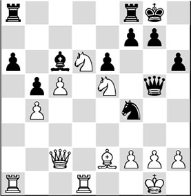
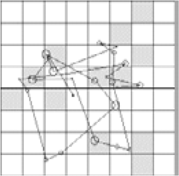
Eye movements of a (grand)master

Eye movements of a beginner
The answer is that with his experienced eye, the grandmaster recognizes patterns at great speed. The mate motif with the knight on e7, the enemy king on h7, a black pawn on g7 and a rook on h3, he has seen all this before.
Also with more difficult combinations, this pattern recognition turns out to be the trick of the trade. Many manuals on learning tactical motifs go into this theme at length.
The big question, which will be central to this book, is if a similar pattern recognition also exists with regard to strategic factors.
The answer is a straightforward ‘yes’. Many stronger players will try to express their predominance in quiet, positional positions, or in endgames, where deeper understanding must decide the issue.
During the famous AVRO tournament that was held in various cities all over the Netherlands in 1938, Professor De Groot conducted an interesting experiment. He invited various players to study different chess positions and to think ‘out loud’ at the same time. The results of these thought processes were laid down in protocols that were painstakingly researched by De Groot after the event.
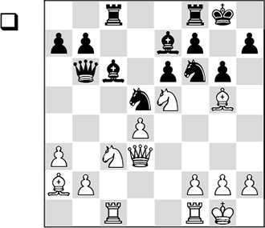
With this isolated pawn-position, taken from a game Lasker-Capablanca, the difference between master and amateur could immediately be observed. The chess fans wrote down normal moves like 1.♖fe1, 1.♗h6, 1.♗b1 or 1.h4. They spent around twenty minutes on this on average. The grandmasters Alekhine, Keres, Fine and Euwe were much more in agreement concerning the direction in which their thoughts should develop. They evaluated the position as almost winning for White after the strong, but hardly obligatory exchange 1.♗a2xd5!!. Alekhine developed a verbal analysis in around 9 minutes which went approximately as follows:
‘1.♗xd5!. Now 1…♗xd5 is not good, therefore 1…exd5. There can follow 2.♘g4, 2.♖e1, or 2.♘xc6 and 3.♖e1, or perhaps 2.♕f3. The move 1.♗xd5 is certainly tempting…
1.♘g4 must be considered, but it doesn’t look good.
1.♘xd5, and then perhaps 1…♘xd5 2.♗xd5 ♗xg5, with numerous, but not very convincing, possibilities.
1.♘xc6. At first sight there follows 1…bxc6, which reinforces Black’s d5-square. A pity. But at any event, White stands better. I would be happy to have such a position in a tournament.
Are there any forcing moves, besides 1.♗xd5 ? It looks very strong. Let’s compare: 1.♘xc6 bxc6: pressure on c6, bishop pair, it’s very pleasant, but the position demands more. Let’s check 1.♗xd5 again.’
This thought protocol gave me the idea to ‘harass’ youth players that I trained with it. I wrote this position on a card for the 11- or 12-year-old Loek van Wely (who later became Dutch champion six times) to work with at home. I asked him to write down in words and variations what he was thinking about and also to write down how much time it took him. At the next training session he showed me what he had written on the card: ‘I see that White has pressure on the knight on f6 and that he can increase the pressure on f7. I see that I can chase away the rook from f8 and then he has problems protecting f7.’
Next, we were able to conclude that Loek had also managed to produce the correct move 1.♗xd5. He had also managed to find the strong follow-up 2.♕f3! after 1…exd5. So here there was grandmaster vision at an early stage! He indicated that he had thought for a total of 30 minutes to find these variations:
1.♗xd5!!
1.♖fe1; 1.♗h6; 1.♗b1; 1.h4; 1.♘g4; 1.♘xd5 ♘xd5 2.♗xd5 ♗xg5; 1.♘xc6 bxc6.
1…exd5
1…♗xd5 2.♗xf6 ♗xf6 3.♘d7.
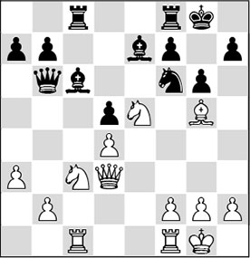
2.♕f3!
2.♘g4 Alekhine; 2.♖fe1 Alekhine; 2.♘xc6 Alekhine.
2…♕d8 3.♖fe1 ♔g7 4.♘g4 ♘xg4 5.♗xe7 ♕d7 6.♗xf8+ ♖xf8 7.♕f4
And White won.
When playing through games where there is a big difference between the two players, you often see that the stronger player gives the position a technical character, hoping that the opponent will at one point sin against one (or more) of the strategic principles.

Loek van Wely’s analysis card (see also next page).
On his website The Max Pam Globe, the well-known Dutch chess journalist Max Pam summarized beautifully what De Groot’s merit was exactly:
‘De Groot discovered that chess players actually do not think. He exposed the myth of the genius who calculates dozens of moves. A chess player doesn’t think, but he does see clusters on the board, which are registered already at first glance. Strong players, as emerges from the experiment, realize within one second which strategies belong to which clusters. They know and see more than they think. This discovery was of great importance for Gestalt psychology.’
And that is exactly what this book is about. The central question is how club players can try to learn to think like a master. As a stepping-stone we have taken Steinitz’s Table of Elements.
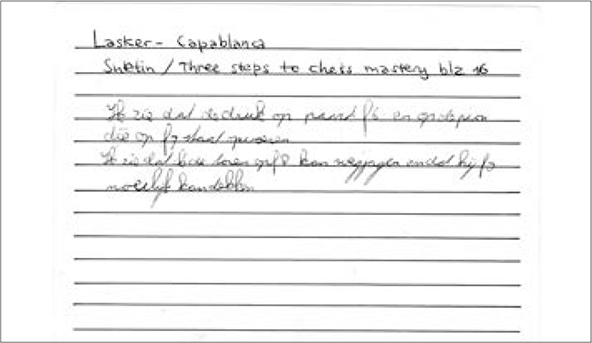